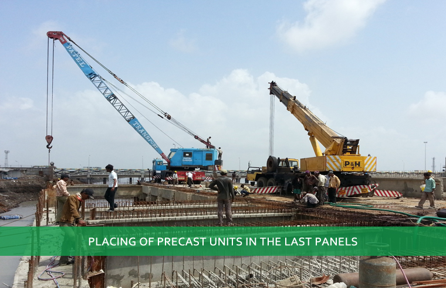
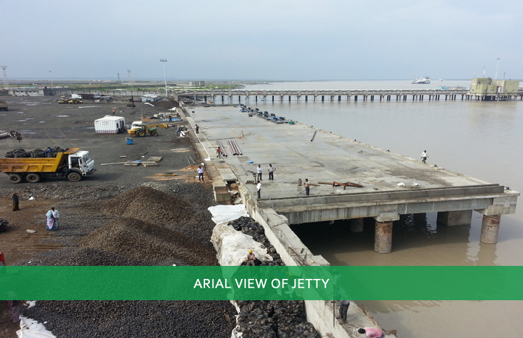
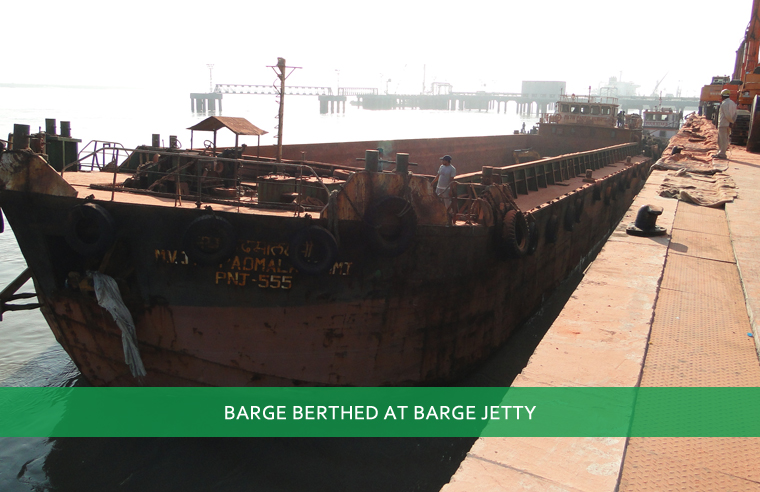

We provide you the economic gateway for global trade
ABOUT BARGE JETTY
The location of the barge jetty is strategic to IFFCO for unloading its raw materials and fertiliser product imports
BARGE JETTY
The Barge Jetty has been constructed on the land allotted by Kandla Port Trust of 36000 sq. mtr. The captive barge jetty has been located in the vacant space between IFFCO's captive liquid jetty (OJ-V) and IOC liquid cargo jetty (OJ-VI), adjacent to the existing IFFCO factory boundary.

BARGE JETTY
The size of the captive barge jetty is 120 meters length and 20 meters width and 2 barges of carrying capacity of 2000 MT to 2500 MT can berth at a time.

BARGE JETTY
The total annual handling capacity of the captive barge jetty is 2.0 million MT.

BARGE JETTY
IFFCO is able to carry out unloading of raw materials and imported fertiliser products directly without any time delay and with minimum losses. The timely receipt of raw materials enable IFFCO to maintain its production plans conveyed to the Government of India for meeting the fertiliser requirements of our Country.
Following are the important dates with reference to the IKLL Barge jetty:
IFFCO has submitted application for setting up Barge jetty on Captive use basis to KPT on 10th November-2009.
Letter of Award from KPT for construction of Barge Jetty- 3rd November-2010.
Model Concession Agreement Signed on 17th February-2011 between IKLL & KPT.
Handing over site by KPT to IKLL and approval of site plan on 14th May-2011.
IKLL Barge jetty has received the combined Environment & CRZ Clearance No- SEIAA/GUJ/EC/7(E)/159/2012 dated 31-05-2012.
Construction of the Jetty has been started from June-2012 after receiving of Environment clearance.
Construction of RCC road between IFFCO and IKLL for movement of dumper - September-2013.
IFFCO's (IKLL) Barge Jetty at Kandla Site was dedicated to the Nation on Saturday, the 16th November, 2013 at Bangalore by Shri G.K. Vasan, Hon'ble Union Minister of Shipping, in the august presence of Dr. Viswapati Trivedi, Secretary of Shipping, Shri M. R. Patel, Ch. Executive Officer, IKBL Ltd. and Dr. P. D. Vaghela, Chairman, Kandla Port Trust.
IFFCO has completed its first MOP vessel MV "Rhin" carrying 59300 MT MOP within approximately 3.5 days. The vessel arrived at Outer Tuna Buoy (OTB which is nearly 16 km from barge jetty) at 1705 hrs on 5th December-2013 and was anchored. Unloading the cargo from the vessel to barges commenced at 2100 hrs on 5th December- 2013.The first barge berthed at barge jetty on 6th December-2013 at 0430 hrs and its unloading operation commenced at 0440 hrs. The vessel was berthed at IFFCO liquid jetty on 07.12.2013 at 0620 hrs. and completed discharge on 09.12.2013 at about 1200 hrs.
The construction of 3 no. of storage sheds at IKLL barge jetty of capacity of 35,000 MT had been completed facilitating higher quantity of solid handling at Barge Jetty